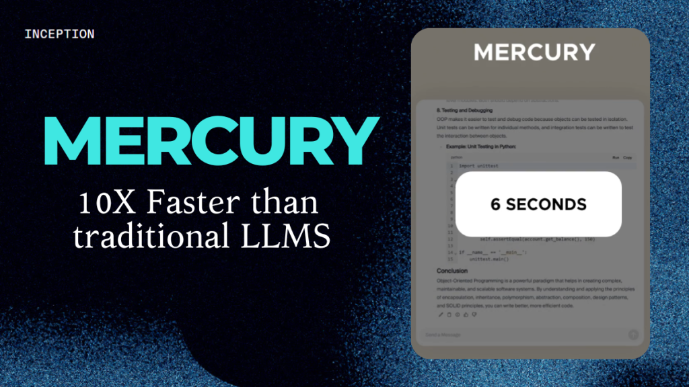

Overview of the Mercury Model
The Mercury model is a new diffusion-based language model (dLLM) developed by Inception Labs that marks a significant shift in language model architecture. It moves away from traditional autoregressive transformer models to a diffusion-based approach, similar to successful image generation models like Stable Diffusion.
Key Features of the Mercury Model:
- Speed: Mercury is reported to be up to 10 times faster than traditional transformer-based models, with token output speeds ranging from 737 to 1109 tokens per second.
- Parallel Processing: Unlike autoregressive models that generate text token by token sequentially, Mercury can process entire text sequences at once, akin to how diffusion models generate images.
- Error Correction: The diffusion methodology allows the model to refine its outputs over multiple passes, potentially reducing errors.
- Efficiency: This model utilizes fewer GPU resources while still maintaining competitive output quality.
- Compatibility: Mercury can replace traditional LLMs in applications such as retrieval-augmented generation (RAG), tool calling, and AI agent tasks.
The introduction of the Mercury model signifies a potential paradigm shift in language model operations. Traditional autoregressive models like GPT generate text one token at a time, where each new token relies on the previous ones, which can propagate errors throughout the generation. In contrast, diffusion models like Mercury start with random noise and iteratively refine the entire output, which may yield more coherent results over longer texts.
Inception Labs has made both the full Mercury model and a mini version available, with the mini version reportedly performing as well as or even better than some leading models in certain benchmarks.
Conclusion
For your blog post, consider discussing how this innovative approach could reshape the landscape of language modeling, its potential applications, and how it compares with existing models across a variety of tasks.
How Diffusion LLMs work
The Mercury Model’s diffusion-based approach works in a fundamentally different way than traditional transformational LLMs. Let’s explore this difference in more detail.
Traditional Transformers vs. Diffusion LLMs
Traditional language models work in an “autoregressive” fashion. This means that they build sentences sequentially, one character (token) at a time, from left to right. For example, if you build the sentence “It’s a beautiful day today,” it predicts the next word that comes next, and then the next, and so on.
On the other hand, a diffusion-based LLM like Mercury works similarly to an image generation model. This model is:
- See the full context: It can see the entire context of a sentence at the same time. While transformers only look at what came before to predict what comes next, diffusion models work by looking at the entire context.
- Masking and filling: It works by punching arbitrary “holes” in the text (masking) and filling them in appropriately while keeping the full context in mind. This is done in several iterations to produce increasingly complete text.
- Parallelization: This approach is better suited to parallel processing on GPUs, which greatly speeds up processing.
Mercury Model performance and benchmarks
In real-world benchmarks, the Mercury model shows impressive performance:
- Coding performance: Mercury Coder specializes in code generation, outperforming models like the GPT-4o Mini and Claude 3.5 Haiku in standard coding benchmarks.
- Fill-in-the-middle: In the ‘fill-in-the-middle’ test, the Mercury Coder Small model scored 84.8 points, outperforming the other models (GPT-4 Mini scored 60 points), demonstrating the diffusion model’s ability to fill in the gaps.
- Sampling efficiency: Mercury requires about 20x fewer sampling steps than other methods that generate images autoregressively. It can process over 1,000 tokens per second on NVIDIA H100 GPUs, outperforming existing models.
- Downstream applications: Mercury models naturally support a variety of downstream applications, including inpainting, text extrapolation, and video keyframe generation, without the need for additional fine-tuning.
Future possibilities
The success of the Mercury model suggests the potential for a major paradigm shift in natural language processing:
- Technology extension: The success of incorporating diffusion techniques into language models shows the potential for this approach to be extended to other AI domains; in particular, models like Show-o already combine diffusion and transformer techniques to implement a unified model for multimodal understanding and generation.
- Efficiency innovations: These innovations, which enable faster processing with fewer computing resources, are expected to significantly increase the accessibility and utility of AI technologies.
- Model scaling: While the Mercury model is currently a relatively small-scale model (the exact number of parameters is currently undisclosed), there is potential for further performance improvements if large tech companies invest in this diffusion technology to develop larger models.
- Hardware optimization: The parallel processing nature of the diffusion model matches well with the characteristics of modern computing hardware, such as GPUs, and is expected to work even more efficiently with future hardware advances.
The Mercury model is a major breakthrough in AI and has the potential to redefine the future of language generation. Advances in diffusion-based LLMs are heralding the emergence of faster, more accurate, and more efficient AI systems.